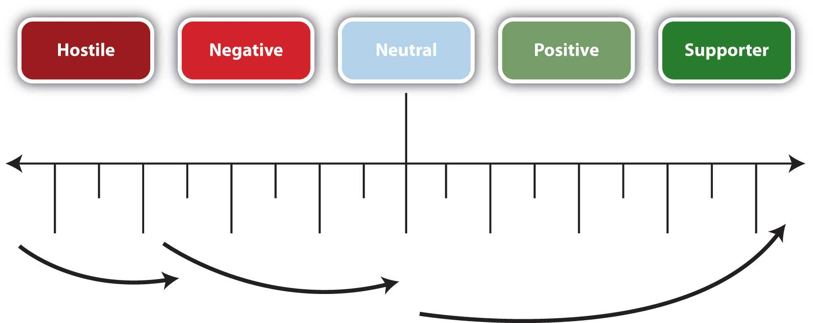

PersuasionAn act or process of presenting arguments to move, motivate, or change your audience. is an act or process of presenting arguments to move, motivate, or change your audience. Aristotle taught that rhetoric, or the art of public speaking, involves the faculty of observing in any given case the available means of persuasion.Covino, W. A., & Jolliffe, D. A. (1995). Rhetoric: Concepts, definitions, boundaries. Boston, MA: Allyn & Bacon. In the case of President Obama, he may have appealed to your sense of duty and national values. In persuading your parents to lend you the car keys, you may have asked one parent instead of the other, calculating the probable response of each parent and electing to approach the one who was more likely to adopt your position (and give you the keys). Persuasion can be implicit or explicit and can have both positive and negative effects. In this chapter we’ll discuss the importance of ethics, as we have in previous chapters, when presenting your audience with arguments in order to motivate them to adopt your view, consider your points, or change their behavior.
MotivationInvolves the force, stimulus, or influence to bring about change. is distinct from persuasion in that it involves the force, stimulus, or influence to bring about change. Persuasion is the process, and motivation is the compelling stimulus that encourages your audience to change their beliefs or behavior, to adopt your position, or to consider your arguments. Why think of yourself as fat or thin? Why should you choose to spay or neuter your pet? Messages about what is beautiful, or what is the right thing to do in terms of your pet, involve persuasion, and the motivation compels you to do something.
Another way to relate to motivation also can be drawn from the mass media. Perhaps you have watched programs like Law and Order, Cold Case, or CSI where the police detectives have many of the facts of the case, but they search for motive. They want to establish motive in the case to provide the proverbial “missing piece of the puzzle.” They want to know why someone would act in a certain manner. You’ll be asking your audience to consider your position and provide both persuasive arguments and motivation for them to contemplate. You may have heard a speech where the speaker tried to persuade you, tried to motivate you to change, and you resisted the message. Use this perspective to your advantage and consider why an audience should be motivated, and you may find the most compelling examples or points. Relying on positions like “I believe it, so you should too,” “Trust me, I know what is right,” or “It’s the right thing to do” may not be explicitly stated but may be used with limited effectiveness. Why should the audience believe, trust, or consider the position “right?” Keep an audience-centered perspective as you consider your persuasive speech to increase your effectiveness.
You may think initially that many people in your audience would naturally support your position in favor of spaying or neutering your pet. After careful consideration and audience analysis, however, you may find that people are more divergent in their views. Some audience members may already agree with your view, but others may be hostile to the idea for various reasons. Some people may be neutral on the topic and look to you to consider the salient arguments. Your audience will have a range of opinions, attitudes, and beliefs across a range from hostile to agreement.
Rather than view this speech as a means to get everyone to agree with you, look at the concept of measurable gainA system of assessing the extent to which audience members respond to a persuasive message., a system of assessing the extent to which audience members respond to a persuasive message. You may reinforce existing beliefs in the members of the audience that agree with you and do a fine job of persuasion. You may also get hostile members of the audience to consider one of your arguments, and move from a hostile position to one that is more neutral or ambivalent. The goal in each case is to move the audience members toward your position. Some change may be small but measurable, and that is considered gain. The next time a hostile audience member considers the issue, they may be more open to it. Figure 14.1 "Measurable Gain" is a useful diagram to illustrate this concept.
Figure 14.1 Measurable Gain
Edward HallHall, E. (1966). The hidden dimension. New York, NY: Doubleday. also underlines this point when discussing the importance of context. The situation in which a conversation occurs provides a lot of meaning and understanding for the participants in some cultures. In Japan, for example, the context, such as a business setting, says a great deal about the conversation and the meaning to the words and expressions within that context. In the United States, however, the concept of a workplace or a business meeting is less structured, and the context offers less meaning and understanding.
Cultures that value context highly are aptly called high-context cultures. Those that value context to a lesser degree are called low-context cultures. These divergent perspectives influence the process of persuasion and are worthy of your consideration when planning your speech. If your audience is primarily high-context, you may be able to rely on many cultural norms as you proceed, but in a low-context culture, like the United States, you’ll be expected to provide structure and clearly outline your position and expectations. This ability to understand motivation and context is key to good communication, and one we will examine throughout this chapter.
Persuasion is the act of presenting arguments for change, while motivation involves the force to bring about change. The concept of measurable gain assesses audience response to a persuasive message.